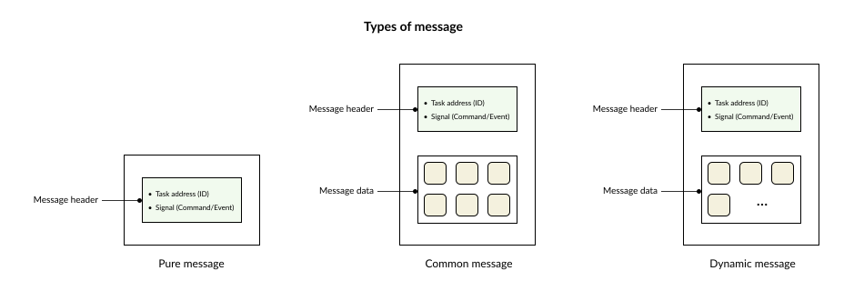
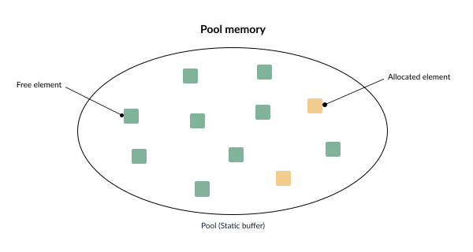

Message
Types of Messages
In inter-task communication, messages play a crucial role as the data exchanged between tasks. In RK, a message is a predefined, custom data type (struct). Furthermore, users can still create their own custom message types depending on the specific needs of their application.
{kind=link}

There are 3 different types of messages:
Pure message: A message type that only contains a Signal (the execution command/event).
Common message: In addition to the Signal, this message type also carries payload data transferred during inter-task communication. The size of this attached data is fixed at 64 bytes.
Dynamic message: Similar to a common message, but the size of the attached data is unrestricted (dynamic). Its limitation depends solely on the available size of the heap memory.
Message Pool
A Message Pool is a mechanism used to organize and store messages throughout their lifecycle. In a literal sense, a pool acts exactly as a “reservoir” or a shared tank of resources.
{kind=link}

Initially, these message types are statically allocated based on a fixed number of messages configured by the user. When a message is needed (i.e., a task requests to fetch a message), the message pool manager allocates an element from this data pool and hands it over to the user. Once the task finishes processing, the user must return this message back to the pool.
In RK, the message pool is utilized to structure the event transmission and reception system, which is detailed in the Event section.